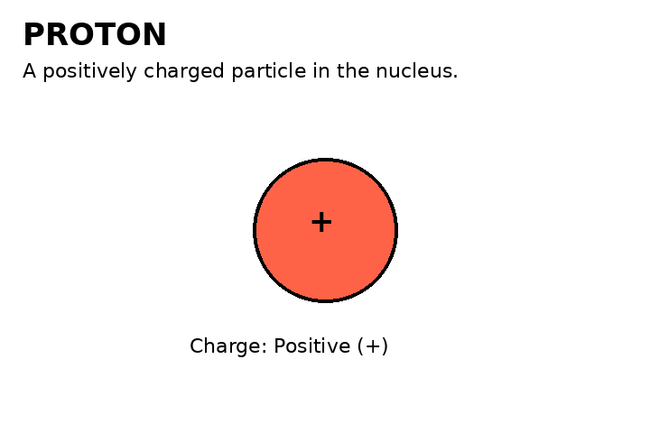
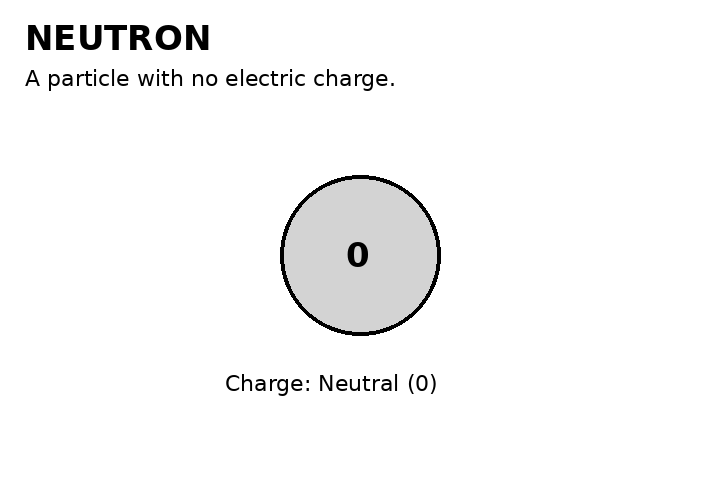
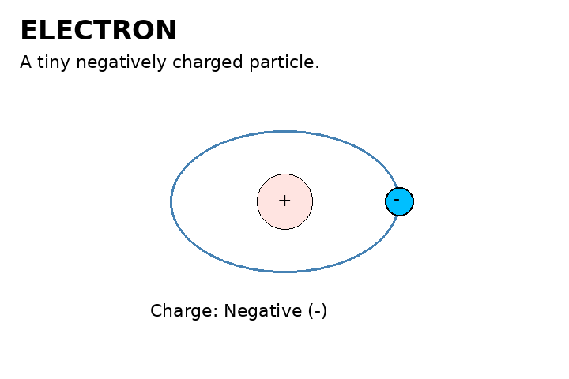
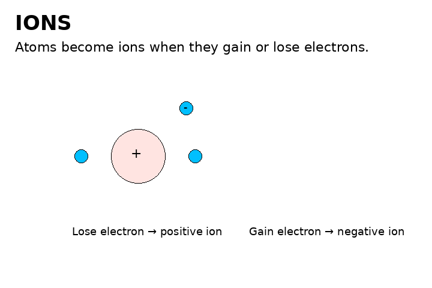
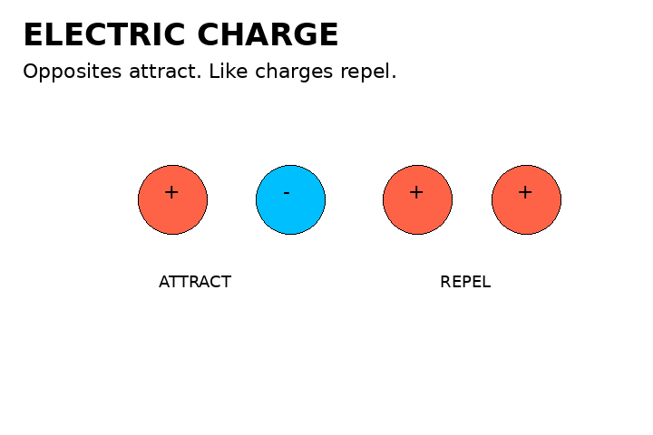

1. What Is an Atom?
An atom has a nucleus in the center. Protons and neutrons are in the nucleus, while electrons are found around it.
Everything around us is made of atoms. These animations show the tiny particles inside atoms and how electric charge works.

An atom has a nucleus in the center. Protons and neutrons are in the nucleus, while electrons are found around it.

A proton has a positive electric charge and is found in the atom's nucleus.

A neutron has no electric charge. It is also found inside the nucleus.

An electron has a negative charge. Electrons are much lighter than protons and neutrons and occupy regions around the nucleus.

An atom becomes an ion when it gains or loses electrons. Losing electrons makes it positive; gaining electrons makes it negative.

Opposite electric charges attract each other. Charges of the same type repel each other.